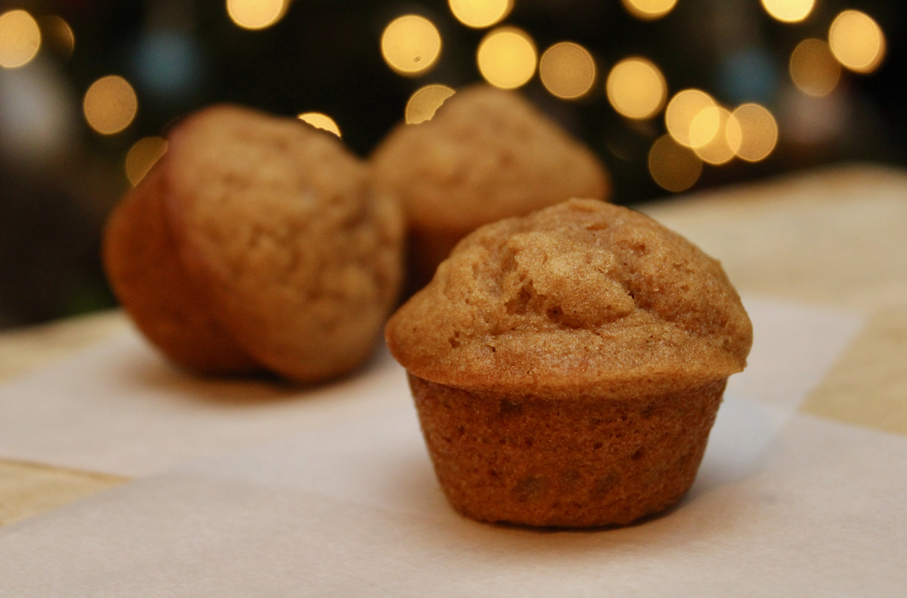

Sweet Potato Muffins

Description
A pumpkin muffin recipe altered to become this delectable
sweet potato concoction that is a true muffin, and not a
cake! Added bonus: this recipe just happens to be dairy
free, a plus for those who are intolerant to dairy.
"Any cupcake consumed before 9AM is, technically, a muffin." ~ Brian P. Cleary
Ingredients
- 1 cup white sugar
- 1 cup cooked, mashed sweet potato
- ½ cup olive oil
- ⅓ cup water
- 2 eggs, beaten
- 1 ⅔ cups all-purpose flour
- 1 teaspoon ground cinnamon
- 1 teaspoon baking soda
- ½ teaspoon baking powder
- ½ teaspoon salt
- ½ cup chopped pecans
Steps
-
Preheat the oven to 350 degrees F (175 degrees C).
Grease a 12-cup muffin pan or line with paper liners.
-
Combine sugar, sweet potato, olive oil, water, and eggs in
a bowl. Combine flour, cinnamon, baking soda, baking powder,
and salt in a second bowl. Add flour mixture and pecans to
the sweet potato mixture. Fold gently until just moistened,
being careful not to overmix. Spoon batter into the prepared
muffin cups, filling each 3/4 full.
-
Bake in the preheated oven until a toothpick inserted into
the center comes out clean, 20 to 25 minutes. Do not overbake.
Remove from oven and cool on wire rack.